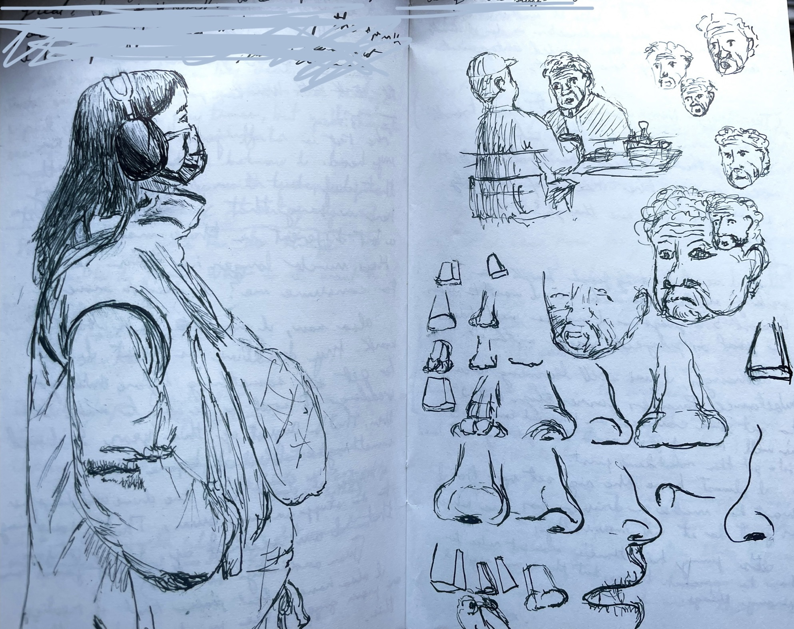

This website is a small project where I wanted to do two things:
1) Learn how to create something using HTML.
2) Have a place where I can post some of the things I made, and write about it.
Thank you for finding your way here.
3D Modeling and Animation
Learning to use Blender was an art journey all on its own. From the many Hours were spent watching tutorials on youtube to learn basic concepts of 3D software in general. Then hundreds more creating things, scrapping things, and just playing around with the tools. When I eventually dabbled with Maya, my biggest struggle was hotkeys.
I eventually found a small niche that I loved working on: Small mascot characters.
Each time I started a project, I based it on trying to challenge myself with something I wanted to learn.
This image for example was created mainly by using python coding to practice creating set patterns for the shape. The only time I used the normal UI was to create the materials and set the lights.
The motivation for this project was because I wanted a new wallpaper for my desktop.
Traditional Art
I had always loved drawing since I was a kid with crayons, however it wasn't only until years ago where I had taken to learning it seriously.
As I was working on learning how to draw perspective, understand how lines affect an image, and how weird human anatomy truly looks. I realized that every moment was also building skill to the 3D projects I have been doing.
Throughout the past few years, I have been keeping a schedule of spending roughly at least an hour a day doing something art related.
To stay dedicated, I have been using my journal and drawing things that are imagined or from reference as I go through my day.

From people that I see while out and about.
To just practicing skills like drawing simple poses while I am on the bus.
Recently, I had been inspired to work with colors a lot more. I eventually chose to try to work with and understand watercolors.
It's because of this that color theory had been solidified in my mind, and one thing that stays in my mind about it is how useful it would be the next time I am working on lighting in a 3D project.
Notebook drafts of a coffee shop
An attempt to water color the shop.
One of my goals with water coloring is to be skilled with layering to consistently create night time scenes.
A big inspiration of as to why I picked up the medium is Mateusz Urbanowicz II's book 'Tokyo at Night.'
Sounds
Sound Foley
One project I had did in collaboration with a friend was a mineshaft 'live diorama.' Besides doing the keyframes for moving objects and cameras, I took the initiative and did sound foley for the project.
The rattling of the cart and elevator were recorded in my kitchen using a fridge and the clatter utensils.
The light music is a song that I made in Logic Pro.